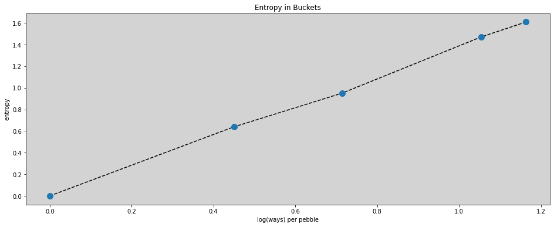
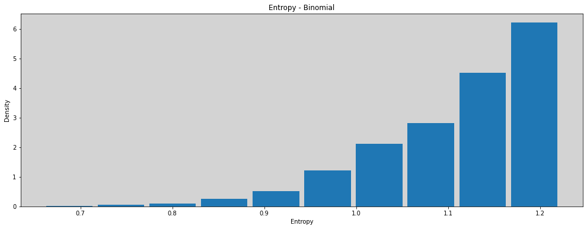

10 - Grande Entropia e Modelos Lineares Generalizados¶
import numpy as np
from scipy import stats
import matplotlib.pyplot as plt
from matplotlib.gridspec import GridSpec
import pandas as pd
import networkx as nx
# from causalgraphicalmodels import CausalGraphicalModel
import arviz as az
# ArviZ ships with style sheets!
# https://python.arviz.org/en/stable/examples/styles.html#example-styles
az.style.use("arviz-darkgrid")
import xarray as xr
import stan
import nest_asyncio
plt.style.use('default')
plt.rcParams['axes.facecolor'] = 'lightgray'
# To DAG's
import daft
from causalgraphicalmodels import CausalGraphicalModel
# Add fonts to matplotlib to run xkcd
from matplotlib import font_manager
font_dirs = ["fonts/"] # The path to the custom font file.
font_files = font_manager.findSystemFonts(fontpaths=font_dirs)
for font_file in font_files:
font_manager.fontManager.addfont(font_file)
# To make plots like drawing
# plt.xkcd()
# To running the stan in jupyter notebook
nest_asyncio.apply()
R Code 10.1¶
buckets = {
"A": (0, 0, 1, 0, 0),
"B": (0, 1, 8, 1, 0),
"C": (0, 2, 6, 2, 0),
"D": (1, 2, 4, 2, 1),
"E": (2, 2, 2, 2, 2),
}
df = pd.DataFrame.from_dict(buckets)
df
| A | B | C | D | E | |
|---|---|---|---|---|---|
| 0 | 0 | 0 | 0 | 1 | 2 |
| 1 | 0 | 1 | 2 | 2 | 2 |
| 2 | 1 | 8 | 6 | 4 | 2 |
| 3 | 0 | 1 | 2 | 2 | 2 |
| 4 | 0 | 0 | 0 | 1 | 2 |
R Code 10.2¶
# Normalize
p_norm = df / df.sum(axis=0)
p_norm
| A | B | C | D | E | |
|---|---|---|---|---|---|
| 0 | 0.0 | 0.0 | 0.0 | 0.1 | 0.2 |
| 1 | 0.0 | 0.1 | 0.2 | 0.2 | 0.2 |
| 2 | 1.0 | 0.8 | 0.6 | 0.4 | 0.2 |
| 3 | 0.0 | 0.1 | 0.2 | 0.2 | 0.2 |
| 4 | 0.0 | 0.0 | 0.0 | 0.1 | 0.2 |
R Code 10.3¶
def entropy(bucket):
uncertainty = []
for q in bucket:
if q == 0:
uncertainty.append(q)
else:
uncertainty.append(q * np.log(q))
return (-1) * np.sum(uncertainty)
H = [entropy(p_norm[key]) for key in p_norm.keys()]
df_H = pd.DataFrame(H).T
df_H.columns = p_norm.keys()
df_H
| A | B | C | D | E | |
|---|---|---|---|---|---|
| 0 | -0.0 | 0.639032 | 0.950271 | 1.470808 | 1.609438 |
R Code 10.4¶
ways = (1, 90, 1260, 37800, 113400)
logwayspp = np.log(ways) / 10
logwayspp
array([0. , 0.44998097, 0.7138867 , 1.05400644, 1.16386767])
plt.figure(figsize=(16, 6))
plt.plot(logwayspp, df_H.T.values, '--', c='black')
plt.plot(logwayspp, df_H.T.values, 'o', ms=10)
plt.title('Entropy in Buckets')
plt.xlabel('log(ways) per pebble')
plt.ylabel('entropy')
plt.show()

R Code 10.5¶
# Build list of canditate distributions
p = [
[1/4, 1/4, 1/4, 1/4],
[2/6, 1/6, 1/6, 2/6],
[1/6, 2/6, 2/6, 1/6],
[1/8, 4/8, 2/8, 1/8],
]
# Compute the expected values of each
result = [np.sum(np.multiply(p_i, [0, 1, 1, 2])) for p_i in p]
result
[1.0, 1.0, 1.0, 1.0]
R Code 10.6¶
# Compute the entropy of each distribution
for p_i in p:
print(-np.sum(p_i * np.log(p_i)))
1.3862943611198906
1.3296613488547582
1.3296613488547582
1.2130075659799042
R Code 10.7¶
p = 0.7
A = [
(1-p)**2,
p*(1-p),
(1-p)*p,
(p)**2,
]
np.round(A, 3)
array([0.09, 0.21, 0.21, 0.49])
R Code 10.8¶
- np.sum(A * np.log(A))
1.221728604109787
R Code 10.9¶
def sim_p(G=1.4):
x = np.random.uniform(0, 1, size=4)
x[3] = 0 # Removing the last random number x4
x[3] = ( G * np.sum(x) - x[1] - x[2] ) / (2 - G)
p = x / np.sum(x)
return [-np.sum(p * np.log(p)), p]
R Code 10.10¶
H = pd.DataFrame([ sim_p(1.4) for _ in range(10000)], columns=('entropies', 'distributions'))
plt.figure(figsize=(17, 6))
plt.hist(H.entropies, density=True, rwidth=0.9)
plt.title('Entropy - Binomial')
plt.xlabel('Entropy')
plt.ylabel('Density')
plt.show()

R Code 10.11¶
# entropies = H.entropies
# distributions = H.distributions
R Code 10.12¶
H.entropies.max()
1.2217257418082403
R Code 10.13¶
H.loc[H.entropies == H.entropies.max(), 'distributions'].values
array([array([0.09039858, 0.21007322, 0.20912962, 0.49039858])],
dtype=object)